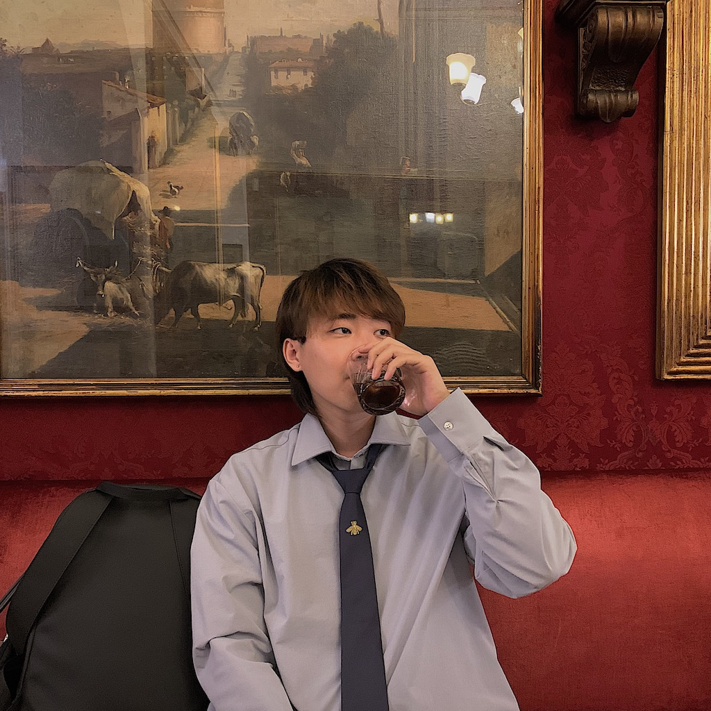

Dongyuan Liu
Understanding the world by artistic thinking & coding.
Dongyuan Liu is a new media artist working with audio-visual practice and interactive installations. He approaches artificial intelligence as a medium, examining the data and structures behind machine learning algorithms to understand what this medium is and how it can be reshaped. His practice focuses not only on what machine learning can do, but on what it is, and how its logic, material, and aesthetics can be reconfigured into perceptible experiences. Alongside his art practice, he is an educator and public practitioner in computer arts and interaction, sharing creative coding and new media methods through courses, workshops, and talks.
dongwendma@gmail.com
EXPERIENCES
- 2022-Current Guest Lecturer, China Academy of Art, Hangzhou, China (Lecturer of 'Composite Construction', Lecturer of 'Creative Coding & Design')
- 2023-2024 Leader of Interaction Related Programme Teaching Department, LAC Studio, Hangzhou, China
- 2021-2023 Tutor, LAC Studio, Hangzhou, China
- 2021-Current Freelancer
EDUCATION
- 2018-2020 MFA Computational Art, Goldsmiths, University of London
- 2013-2017 BFA Digital Media Arts, Tianjin Academy of Fine Arts
AWARDS
- Nov 2017 Grand Prize, Busan Calligraphy Biennale, Busan, Korean
- Jun 2017 Academy Award, Tianjin Academy of Fine Arts
EXHIBITIONS
- Sept 2020 Chimera, Computational Arts MA/MFA Degree Show, St. James Hatcham Church, London (Exhibited 'machinesMemory', a Multi-screens installation.)
- Sept 2019 Threads, Computational Arts MA/MFA Degree Show, St. James Hatcham Church, London (Exhibited 'Lively', a machine performance.)
- May 2019 2POP||!2POP, Goldsmiths MA/MFA Pop-up Show, London
- Feb 2019 Get Lerped, Goldsmiths MA/MFA Pop-up Show, St. James Hatcham Church, New Cross, London
- Jun 2017 Excellent Graduation Works Exhibition, Tianjin Academy of Fine Art, TAFA Museum, Tianjin, China
CONFERENCE
- 2021 'machinesMemory', Proceedings of EVA London 2021 (EVA 2021)
WORKSHOPS
- 2022 'Data Aesthetics', LAC Studio x China Academy of Art, Hangzhou, China
- 2021 'Fruit Chorus', LAC Studio x Zhejiang Gongshang University, Hangzhou, China
- 2021 3D printing experience, LAC Studio, Hangzhou, China
- 2021 DIY Game Device, LAC Studio, Hangzhou, China